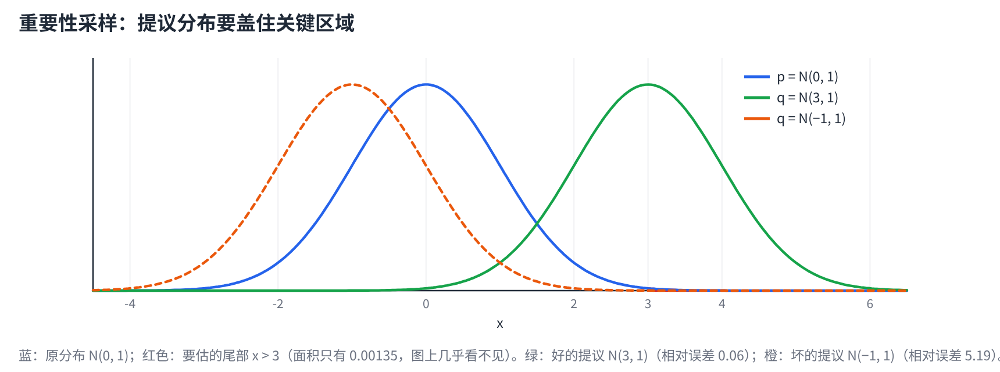
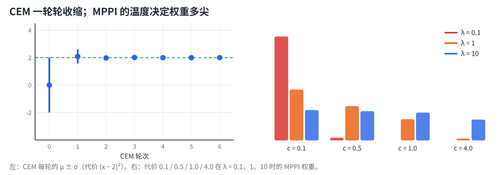
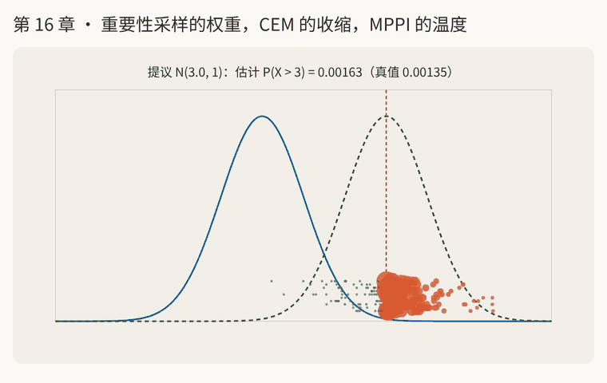

第 16 章 · 蒙特卡洛与采样：用样本平均代替积分，重要性采样、CEM 和 MPPI
本地运行
git clone https://github.com/wikieden/math-and-eval-stats
cd math-and-eval-stats/code/notebooks
pip install jupyterlab torch numpy
jupyter lab ch16_monte_carlo_sampling.ipynb也可以下载后直接用 VS Code 打开 .ipynb 运行。需要 GPU 的章节在 Colab 里选「代码执行程序 → 更改运行时类型 → GPU」。
本章回答：期望算不出来时，"抽样再平均"为什么可行，误差有多大？罕见事件怎么估？PPO 里那个比率 π_new/π_old 是从哪来的？CEM、MPPI 这些"采样式规划"在做什么？
讲解日期：2026-11-25 · 上一章：第 15 章 约束与凸优化 · 下一章：第 17 章 生成模型的数学
对应原文：Särkkä《Bayesian Filtering and Smoothing》materials/text/books/sarkka-bayesian-filtering-smoothing-2e.txt§11.2 重要性采样 L12852 起；Sutton & Barto §5.5 off-policy 与重要性采样（复用cs285-deep-rl/materials/）；MPPI 见《机器人运控与强化学习》第 15 章
本章缩写：MC = Monte Carlo（蒙特卡洛：用随机抽样做数值计算，名字来自摩纳哥的赌场）；IS = Importance Sampling（重要性 / 采样）；q = 提议分布（proposal：实际从它抽样）；w = p/q = 重要性权重；PPO = Proximal Policy Optimization（近端 / 策略 / 优化）；CEM = Cross-Entropy Method（交叉熵 / 方法）；MPPI = Model Predictive Path Integral（模型预测 / 路径积分）；λ（本章）= MPPI 的温度。全部缩写见 附录 · 缩写与术语表
讲解
第一步：蒙特卡洛：样本平均代替积分，误差 ∝ 1/√n（2026-11-25）
类比：估一片湖的面积。 在包住湖的正方形里随机扔石子，数落进湖里的比例，乘正方形面积。扔得越多越准，但要准 10 倍，得扔 100 倍。
例子：估计 E[X²]（X ~ N(0, 1)，真值 1，Var(X²) = 2）：
| n | 一次的估计 | 重复 2000 次的标准差 | 理论 √(2/n) |
|---|---|---|---|
| 100 | 0.9323 | 0.1413 | 0.1414 |
| 10000 | 0.9962 | 0.0144 | 0.0141 |
误差只和样本数、f 的方差有关，和维度无关：这是蒙特卡洛在高维问题里（策略梯度、扩散模型的 loss、粒子滤波）不可替代的原因。
一句话：蒙特卡洛 = 抽样再平均，标准误 = √(Var/n)；n 翻 100 倍误差才小 10 倍，但和维度无关。
第二步：重要性采样：从别的分布抽，再按权重改正（2026-11-25）
类比：调查"住在山顶的人"的意见。 随机在全城抽人，几乎抽不到山顶的；不如专门去山顶抽，再按"山顶人口在全城的比例"把结果换算回来。
（Särkkä §11.2，L12852 起）只要 q 在 p·f 不为 0 的地方都不为 0。
例子：估计罕见事件 P(X > 3)（X ~ N(0, 1)，真值 0.00135），各用 1000 个样本、重复 500 次看相对误差：
| 提议分布 q | 一次的估计 | 相对误差 |
|---|---|---|
| N(0, 1)（直接数） | 0.00100 | 0.82 |
| N(3, 1)（集中在尾部） | 0.00124 | 0.06 |
| N(−1, 1)（偏到反方向） | 0.00000 | 5.19 |
好的提议分布让误差小 10 多倍；坏的提议分布几乎抽不到关键区域，偶尔抽到一个就带着巨大的权重，方差爆炸。

图 16-1 · 蓝色是原分布 N(0, 1)，红色阴影是要估的尾部 x > 3；绿色提议 N(3, 1) 正好覆盖尾部，橙色提议 N(−1, 1) 离得更远一句话：重要性采样从 q 抽、乘权重 p/q 改正；q 要覆盖"真正贡献大"的区域，否则方差爆炸。
第三步：在 RL 里见过：PPO 的比率就是重要性权重（2026-11-25）
类比：用上周的问卷数据评估这周的新政策。
策略梯度要的是新策略下的期望，但样本是旧策略采的（off-policy、或者同一批数据要更新好几步）。按重要性采样，每个样本乘 \(r = \pi_{\text{new}}(a\mid s)/\pi_{\text{old}}(a\mid s)\)。
例子：旧策略选这个动作的概率 0.20，新策略 0.30：r = 1.50。
第二步的教训在这里同样成立：新旧策略差太多，权重就会很大、方差爆炸。PPO 把 r 截断到 [1 − ε, 1 + ε]（常用 ε = 0.2，这里就用 1.2），本质上是"不让提议分布和目标分布离太远"。
补基础：PPO 的完整推导和截断目标见第 24 章 策略梯度推导和《从零学强化学习》PPO 那一章。
一句话：PPO 的比率 π_new/π_old 是重要性权重；截断它是为了不让权重太大、方差爆炸。
第四步：CEM 与 MPPI：用采样做优化（2026-11-25）
类比：一群人在雾里找最低点。 每个人随便走一步，报告自己的高度；下一轮所有人都往"报告高度最低的那几个人"附近聚拢。
CEM：从 N(μ, σ²) 抽 n 个候选，留代价最低的 k 个（精英），用它们的均值、标准差更新 μ、σ，重复。
例子：代价 \((x - 2)^2\)，从 μ = 0、σ = 2 开始，每轮 50 个候选、留 10 个精英：
| 轮 | 0 | 1 | 2 | 3 | 4 |
|---|---|---|---|---|---|
| μ | 0.000 | 2.086 | 1.981 | 2.009 | 2.001 |
| σ | 2.000 | 0.516 | 0.119 | 0.015 | 0.002 |
MPPI：不只留精英，而是给每个样本按代价做指数加权（软版本的精英筛选）：
例子（4 个候选，代价 0.1、0.5、1.0、4.0）：
| 温度 λ | 权重 |
|---|---|
| 0.1 | [0.982, 0.018, 0.000, 0.000]：几乎只信最好的 |
| 1.0 | [0.477, 0.320, 0.194, 0.010] |
| 10 | [0.282, 0.271, 0.257, 0.191]：接近平均 |
MPPI 在机器人上用作 MPC：每个控制周期采样几百条控制序列，用动力学模型滚动出代价，加权平均成新的控制序列（"路径积分"的名字来自它的推导）。

图 16-2 · 左：CEM 每轮的 μ ± σ 收缩到 x = 2；右：同样 4 个代价，λ = 0.1 / 1 / 10 时的 MPPI 权重场景代码：MPPI 一步的核心几行（NumPy 写法，和本章代码一致）：
U = u_nominal + sigma * rng.standard_normal((K, H, m)) # K 条扰动后的控制序列，每条 H 步
costs = np.array([rollout_cost(model, x0, u) for u in U]) # 用动力学模型滚出每条的代价
w = np.exp(-(costs - costs.min()) / lam); w /= w.sum() # 指数加权
u_nominal = (w[:, None, None] * U).sum(0) # 加权平均成新的控制序列，执行第一步
一句话：CEM 留精英更新分布，MPPI 按 exp(−代价/λ) 加权平均；λ 越小越贪心，越大越接近平均。
动画演示：重要性采样的权重和 CEM 的收缩

可交互版：animations/16-monte-carlo-sampling.html（下拉切换"重要性采样 / CEM / MPPI"；滑块调提议分布的中心、温度 λ）。
怎么看：
- 重要性采样：拖提议分布的中心，样本点的大小代表权重；中心远离尾部时，只有零星几个巨大的点，估计值剧烈跳动（第二步）；
- CEM：每一帧是一轮，候选点、精英点（高亮）、新的 μ ± σ（第四步）；
- MPPI：4 个候选的权重柱，拖 λ 看它们从"一家独大"变成"平均分配"（第四步）。
练习与作答记录
题 1（第一步）：用蒙特卡洛估 E[X]（X ~ 均匀分布 U(0, 1)，Var = 1/12），要让标准误小于 0.001，至少要多少个样本？
作答：（待作答）
题 2（第二步）：从 q = U(0, 2)（密度 1/2）抽样，去估 p = U(0, 1) 下的 E[X]。每个样本的权重是多少？x > 1 的样本权重是多少？
作答：（待作答）
题 3（第三、四步）：（a）PPO 里新策略概率 0.05、旧策略 0.20，比率是多少？截断到 [0.8, 1.2] 后用多少？（b）MPPI 两条轨迹代价 1 和 3，λ = 2 时权重各是多少？
作答：（待作答）
口诀
扔石子估湖面，误差根号 n 分之一，和维度无关；
去山顶抽人再换算，权重 p 比 q，提议分布要盖住关键处；
PPO 的比率是权重，截断防止爆方差；
CEM 留精英，MPPI 按 e 的负代价除温度加权。
本章复习卡片
ST63（蒙特卡洛的标准误）、ST64（重要性采样的公式与提议分布的要求）、ST65（CEM 与 MPPI 的更新规则、温度 λ 的作用）。练习做完后，按答错、卡住的地方补上。
附录 · 延伸阅读
留给以后深入学习用，不影响本章主线。★ 是建议先读的。
推荐阅读
| 读什么 | 读哪里 | 读它为了什么 |
|---|---|---|
| ★ Särkkä | §11.2–11.4 L12852 起 | 重要性采样、序贯重要性采样、重采样（粒子滤波的基础，第 20 章） |
| ★ 《机器人运控与强化学习》第 15 章 | MPPI 部分 | MPPI 在机器人上的完整算法 |
| Sutton & Barto | §5.5 | off-policy 学习里的重要性采样与加权重要性采样 |
| 第 24 章 策略梯度推导 | PPO 部分 | 比率截断目标的来历 |
数学原理
- 无偏性：\(\mathbb E_q[f\,p/q] = \int f\frac pq q\,dx = \int fp\,dx = \mathbb E_p[f]\)，只要 q > 0 的地方覆盖了 fp ≠ 0 的地方。
- 最优提议分布：让估计方差为 0 的 q 是 \(q^* \propto |f|p\)（对非负 f）；估尾部概率时，q* 就是"截在尾部的 p"，N(3, 1) 是它的一个好近似。
- 有效样本数：\(\text{ESS} = (\sum w_i)^2/\sum w_i^2\)，权重越不均匀 ESS 越小；粒子滤波用它判断什么时候重采样。
- MPPI 的来历：最优控制问题里，代价的指数变换 exp(−S/λ) 把 HJB 方程线性化，最优控制可以写成采样轨迹按 exp(−S/λ) 加权的平均（路径积分控制）。
公式清单
| 公式 | 意思 |
|---|---|
| \(\frac1n\sum f(x_i)\)，标准误 \(\sqrt{\mathrm{Var}(f)/n}\) | 蒙特卡洛 |
| \(\frac1n\sum f(x_i)\,p(x_i)/q(x_i)\)，\(x_i\sim q\) | 重要性采样 |
| \(r = \pi_{\text{new}}/\pi_{\text{old}}\)，截断到 \([1 - \epsilon, 1 + \epsilon]\) | PPO 比率 |
| \(w_i \propto \exp(-(c_i - c_{\min})/\lambda)\) | MPPI 权重 |
代码对照：把本章的数字用代码算一遍
代码在仓库本地
math-and-eval-stats/solutions/chapter-code/ch16_monte_carlo.py，配套测试tests/test_ch16.py：
bash cd math-and-eval-stats/solutions/chapter-code uv run python ch16_monte_carlo.py uv run pytest tests/test_ch16.py
讲义 ↔ 代码：
| 讲义 | 公式 | 写法 | 跑出来 |
|---|---|---|---|
| 第一步 MC | 样本平均 | mc_mean_x2(n)、mc_error(n) |
n = 100：标准差 0.1413 |
| 第二步 IS | f·p/q | tail_importance(1000, 3.0)、relative_error(...) |
0.00124，相对误差 0.06 |
| 第三步 PPO | π_new/π_old | ppo_ratio(0.30, 0.20) |
1.5 |
| 第四步 CEM | 精英更新 | cem() |
第 4 轮 μ = 2.001 |
| 第四步 MPPI | exp(−c/λ) | mppi_weights(c, 1.0) |
[0.477, 0.320, 0.194, 0.010] |
关键几行：
w = np.exp(norm.logpdf(x) - norm.logpdf(x, shift)) # 权重 p/q，在对数空间里相减更稳
est = ((x > 3) * w).mean() # 重要性采样估计
e = x[np.argsort(cost(x))[:elite]] # CEM：按代价排序取前 k 个
w = np.exp(-(costs - costs.min()) / lam) # MPPI：先减最小代价，防止 exp 下溢
代码里才看得到的 3 件事：
- 权重在对数空间算：p、q 都很小时直接相除会下溢成 0/0；先算 log p − log q 再取 exp。
- MPPI 先减最小代价：代价都很大时 exp(−c/λ) 全部下溢成 0，归一化就变成 0/0；减掉 c_min 不改变归一化后的权重（第 22 章 logsumexp 同一个技巧）。
- CEM 的 σ 会塌到 0：精英都挤在一起时标准差趋于 0，再也探索不了；实际实现会给 σ 加一个下限或噪声，代码里只加了 1e-6 防止除零。
自己改一改（不影响练习答案）：
- 把重要性采样的提议分布换成 N(3, 0.3²)（太窄），相对误差变好还是变坏？
- 把 CEM 的精英数从 10 改成 2，收敛更快还是更容易卡住？